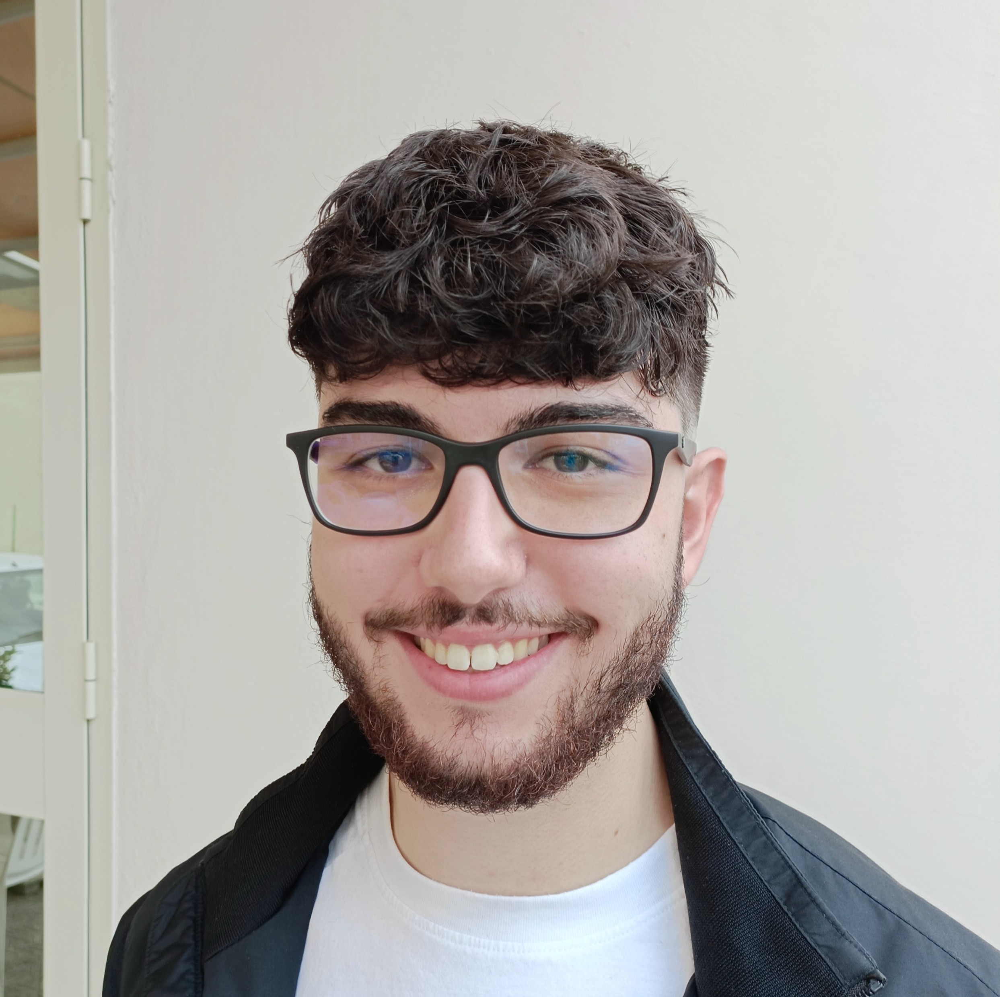

Chi sono
Appassionato di tecnologia, ho completato gli studi presso l’ITT Sangallo con un percorso incentrato soprattutto sullo sviluppo software e sul web. Ho lavorato con diversi linguaggi di programmazione e tecnologie per applicazioni e siti web, mantenendo sempre un approccio pratico e orientato alla risoluzione dei problemi.

Profilo
Sono Gabriele Scucchia, diplomato in Informatica e Telecomunicazioni. Mi piace affrontare problemi tecnici in modo pratico, imparando velocemente da ogni esperienza, sia a scuola che nei tirocini.
Nel tempo libero seguo gaming e motori: passioni che mi aiutano a rimanere aggiornato sulle nuove tecnologie e a sviluppare creatività e attenzione ai dettagli.
Dati principali
- Nome: Gabriele Scucchia
- Data di nascita: 24/02/2007
- Nazionalità: Italiana
- Email: gabrielescucchia@gmail.com
- Telefono: +39 331 281 354
- Indirizzo: Via Montelepre 8, Narni Scalo (TR) 05035
Istruzione e formazione
Istituto Tecnico Tecnologico "Allievi-Sangallo"
12/08/2020 – 25/06/2025 · Terni (Italia)
Diploma in Informatica e Telecomunicazioni · Voto finale: 91/100
Classificazione nazionale: Livello 4 EQF.
Principali competenze acquisite
Programmazione in C, C++, Python, Java, JavaScript, HTML; sviluppo web con framework (React, Bootstrap) e gestione database (MySQL); progettazione e gestione di sistemi informativi; reti informatiche e protocolli di comunicazione; TPSI; sicurezza informatica e normativa sulla sicurezza; project management.
Istituto
Sito dell’istituto
Sede: Viale della Stazione, 59, 05035, Narni Scalo (TR), Italia.
Esperienza lavorativa (tirocini)
Queste esperienze di tirocinio hanno affiancato il mio percorso di studi orientato al software, permettendomi di applicare nella pratica ciò che ho imparato a scuola e di confrontarmi con problemi reali di assistenza informatica.
Studente tirocinante – Tecnico informatico
R.PC - Soluzioni Informatiche – Narni Scalo (TR)
15/01/2024 – 25/01/2024
Supporto tecnico con focus su installazione e configurazione di software
e sistemi operativi, affiancato da attività di manutenzione di PC,
notebook, tablet e telefoni, diagnosi di problemi e supporto nella
gestione dei clienti.
Studente tirocinante – Tecnico informatico
R.PC - Soluzioni Informatiche – Narni Scalo (TR)
03/06/2024 – 22/06/2024
Prosecuzione delle attività di assistenza tecnica, con particolare
attenzione alla configurazione software, alla risoluzione di problemi
informatici e al contatto con i clienti.
Studente tirocinante – Tecnico informatico
BGA Rework – Terni (TR)
16/09/2024 – 28/09/2024
Supporto tecnico con attività più vicine all’hardware (diagnosi e
riparazione, reballing, utilizzo di strumenti di laboratorio), come
completamento pratico di un percorso principalmente orientato al
software.
Competenze tecniche
Il mio percorso è principalmente incentrato sul software e sullo sviluppo web; le competenze legate all’hardware derivano soprattutto dalle esperienze di tirocinio e rappresentano un supporto pratico in più.
- Sviluppo software con diversi linguaggi (C, C++, Python, Java, JavaScript).
- Sviluppo web (frontend e backend di base) e gestione database (es. MySQL).
- Progettazione di sistemi informativi, reti, protocolli e sicurezza di base.
- Conoscenze operative di manutenzione e diagnosi di PC e dispositivi.
Strumenti e linguaggi
- Posta elettronica, Windows, Microsoft Office, Google Chrome
- HTML, CSS, JavaScript, JSON, XML
- Python, Java, C, C++
- MySQL, SQL, PHP
Lingue
- Italiano: madrelingua
- Inglese: livello B1 (ascolto, lettura, produzione e interazione orale, scrittura)
Altre informazioni
Patenti di guida: AM, A1, B1, B.
Autorizzo il trattamento dei dati personali ai sensi dell’art. 13 d. lgs. 196/2003
e dell’art. 13 GDPR 679/16.